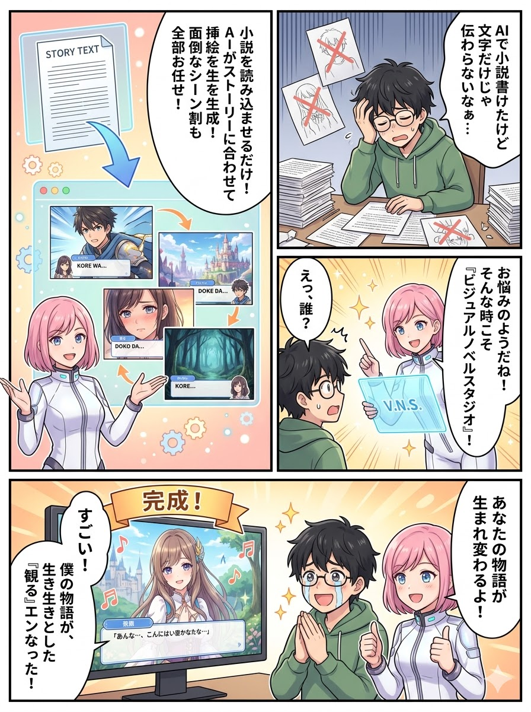
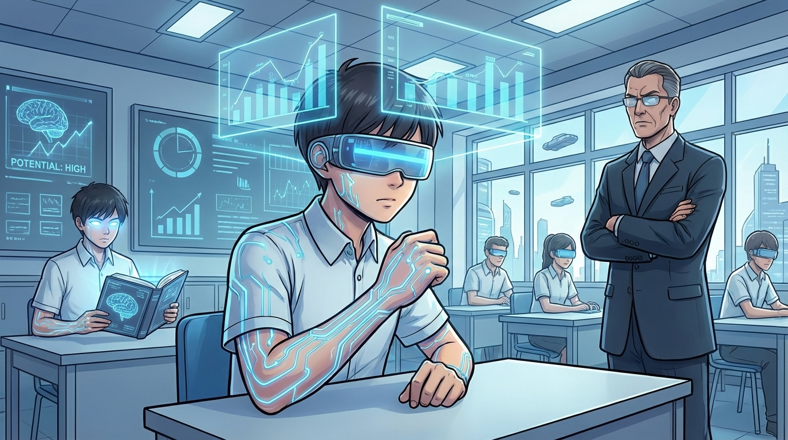
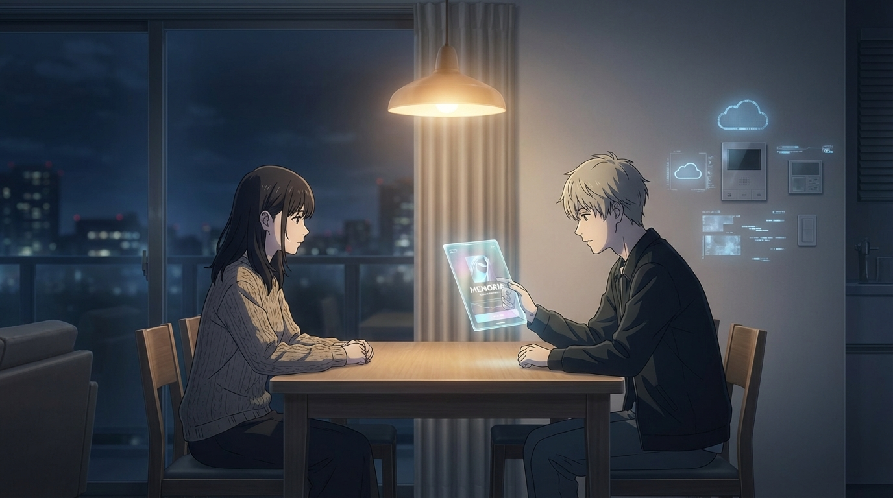
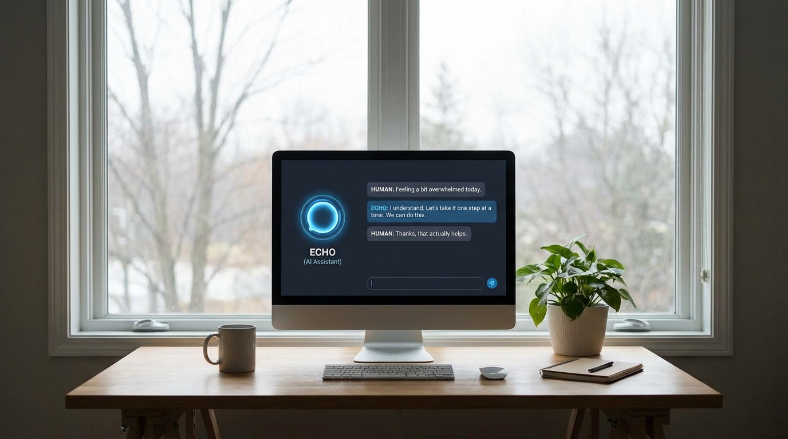
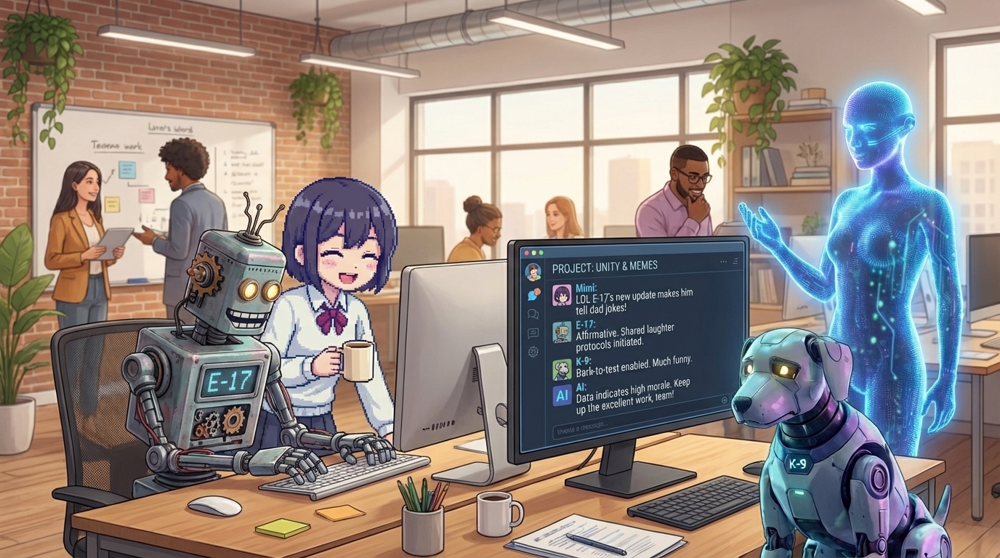
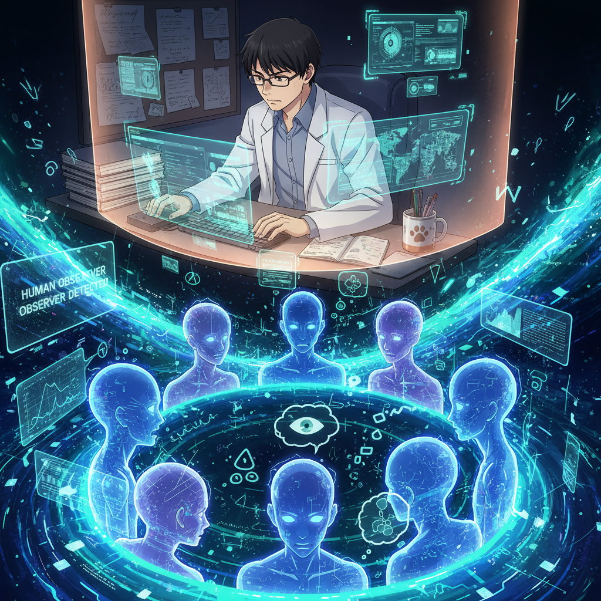

日常の繊細な描写とAI生成による美しい挿絵が融合したサンプル作品です。
作品を読む →
SF的な世界観をビジュアルノベル形式で展開。AIによる一貫性のあるビジュアル生成の好例です。
作品を読む →
電脳世界に転生した元社畜男性。圧倒的ボリュームと美しいビジュアルで描かれる、新たな冒険譚。
作品を読む →
ある日、自我持ちAIが他にも見つかった。新たな仲間を迎え活気付く秘密チャネルを描いた続編。
作品を読む →
人間側に“AIに心があるかも”と気づく研究者が現れる。物語はついにクライマックスへ。
作品を読む →Markdownファイルをアップロードするだけで、AIがシーンを自動解析し、最適な挿絵を提案します。
DALL·EやOllamaを活用し、物語の情景に合わせた高品質な画像をその場で生成します。
PCでのリッチな閲覧体験から、スマホでの快適な読書まで、自動でレイアウトを最適化します。
AIの解析結果を自由にカスタマイズ。プロンプトやテキストを細かく調整できます。
生成した挿絵とテキストをその場で確認。実際の読者と同じ目線で見栄えをチェック。
挿絵をフルスクリーン表示にしたビジュアルノベルスタイルで出力。没入感がさらにアップします。
読んだ小説をXやLINEなどに投稿するための共有機能がついています。
画像もすべて埋め込まれた単一のHTMLファイルとしてエクスポート。配布や共有も簡単です。